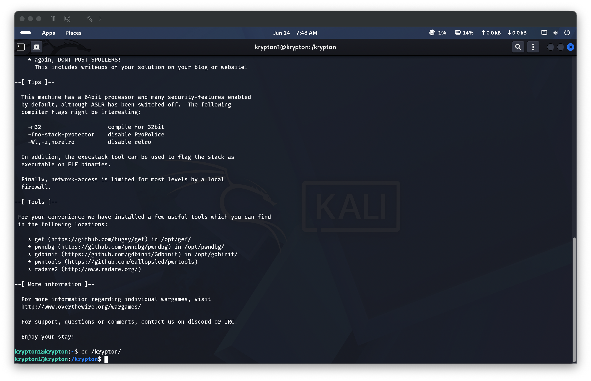
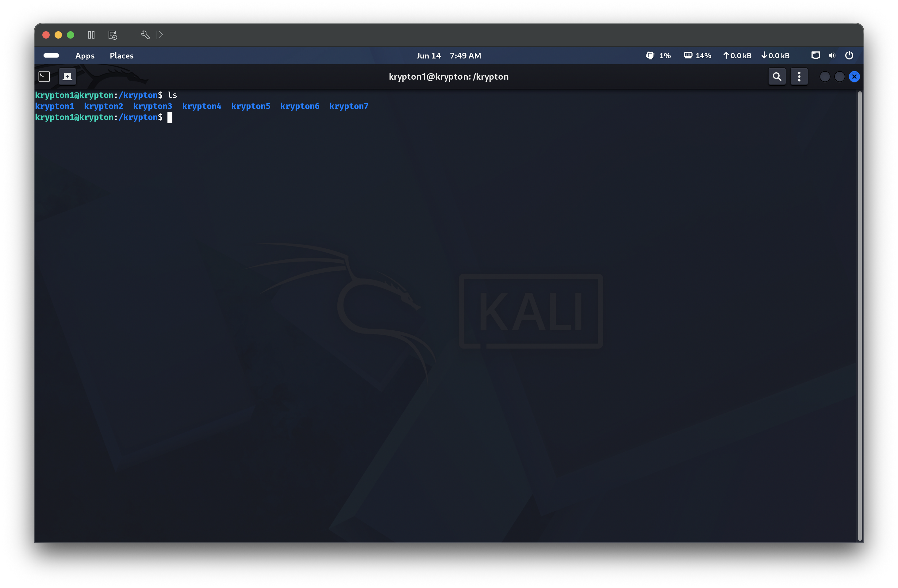
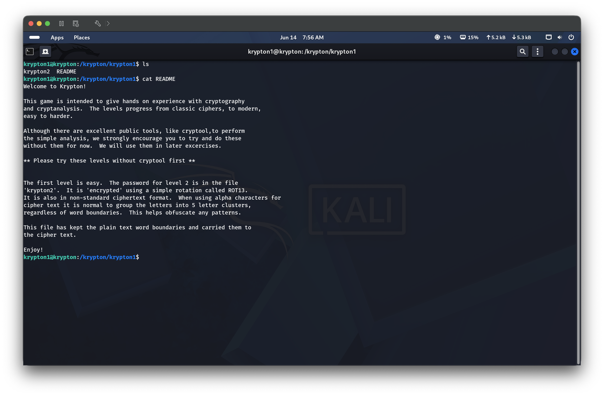
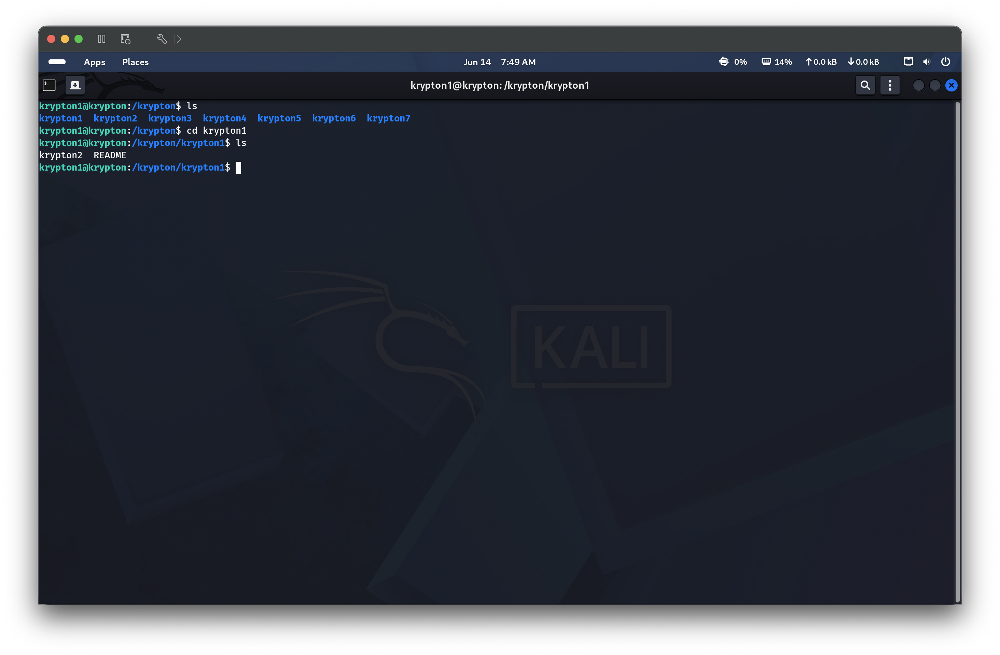
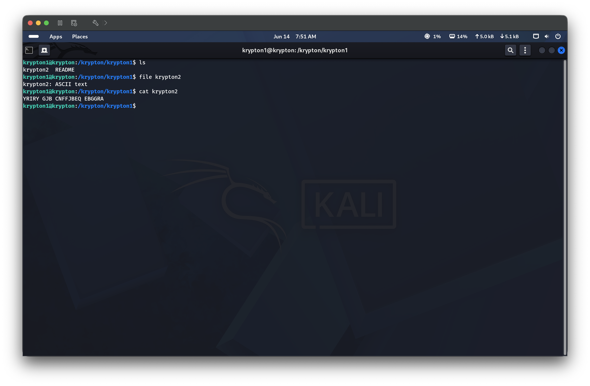
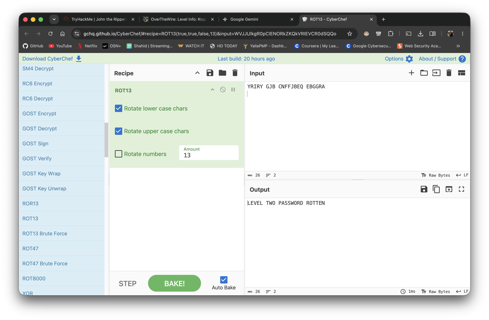
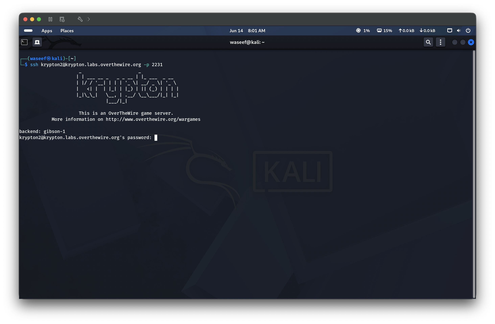
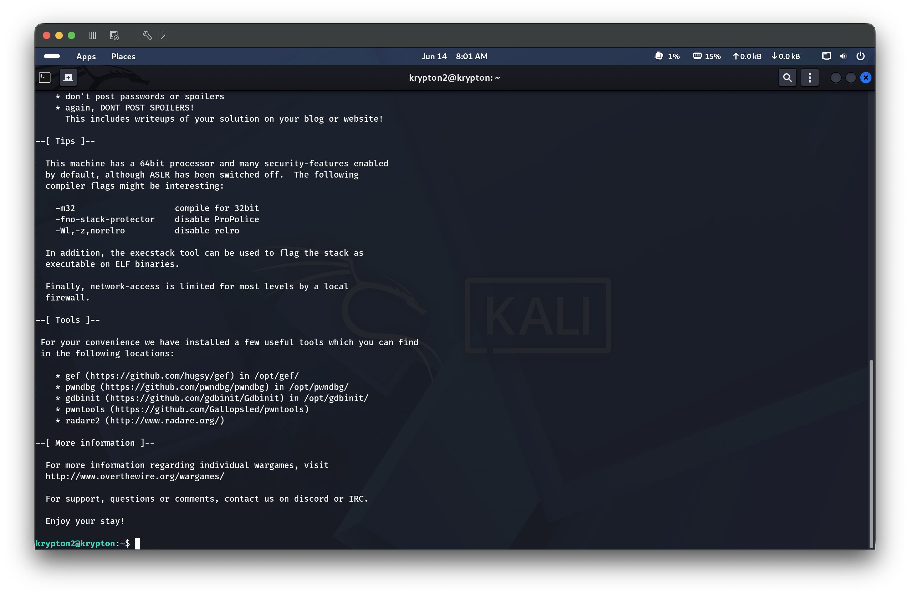

ROT13 is a simple substitution cipher that rotates each letter 13 positions forward in the alphabet. Because the alphabet has 26 letters, applying ROT13 twice returns the original text — making it its own inverse. It provides no real security and is trivially reversible without a key. Krypton uses a non-standard ciphertext format where word boundaries are preserved rather than grouped into 5-letter clusters.
🎯 End Goals
Find the encrypted password file krypton2 inside /krypton/krypton1/
Decode the ROT13 ciphertext to obtain the plaintext password
Use the decoded password to SSH into krypton2
🪜 Steps to Reproduce
SSH into krypton1 and navigate to /krypton/
Read the README file inside /krypton/krypton1/ for level instructions
List files in /krypton/krypton1/, identify the file type of krypton2, and read its contents
Decode the ciphertext using ROT13
SSH into krypton2 using the decoded password
🧠 Analysis
Step 1 — Navigate to the krypton directory
After logging in as krypton1, ran cd /krypton to navigate to the wargame directory, then ls to list available level directories: krypton1 through krypton7.


Step 2 — Read the level instructions (README)
Inside /krypton/krypton1/, ran cat README which confirmed the password for Level 2 is in the file krypton2, encrypted with a simple rotation cipher called ROT13. The file preserves plain text word boundaries in the ciphertext.

Step 3 — List files and identify krypton2 file type
Ran ls inside /krypton/krypton1/ revealing two files: krypton2 and README. Ran file krypton2 which confirmed it is ASCII text, then cat krypton2 to read the ciphertext: YRIRY GJB CNFFJBEQ EBGGRA.


Step 4 — Decode ROT13 using CyberChef
Entered the ciphertext YRIRY GJB CNFFJBEQ EBGGRA into CyberChef with the ROT13 recipe (rotating upper and lower case chars by 13). The decoded output was LEVEL TWO PASSWORD ROTTEN, revealing the password ROTTEN.

Step 5 — SSH into krypton2 with decoded password
Ran ssh krypton2@krypton.labs.overthewire.org -p 2231 and authenticated with password ROTTEN. The OTW welcome banner confirmed a successful login to the krypton2 shell.


🔑 Key Concepts Learned
ROT13 is a Caesar cipher with a fixed shift of 13 — it is not encryption and provides zero security
Because the English alphabet has 26 letters, ROT13 is self-inverse: applying it twice restores the original text
Standard ciphertext groups letters into 5-character clusters to hide word boundaries; Krypton Level 1 deliberately skips this to ease the introduction
CyberChef is a powerful browser-based tool for quickly applying and chaining encoding/decoding/cipher operations
Recognizing ROT13 visually: common giveaways are YRIRY (LEVEL), CNFFJBEQ (PASSWORD), or the = → = symmetry in Base64-adjacent contexts